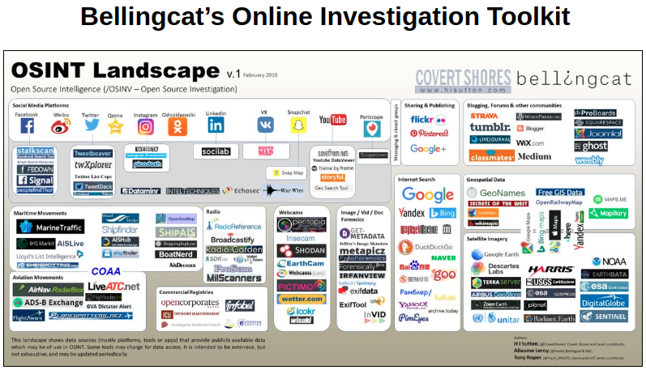

On September 2024, Bellingcat announced the new Online Investigations Toolkit, now hosted on GitHub. Over the years, the toolkit has taken many forms starting as a Google Doc, later a Google Sheet, and even circulated as a PDF. In 2020, the "Guides & Handbooks" section included a link to a document that is no longer accessible, though it can still be found online. Your task is to identify the type of hazard listed at the top of the table on page 39 within that document (answer format: Word).
